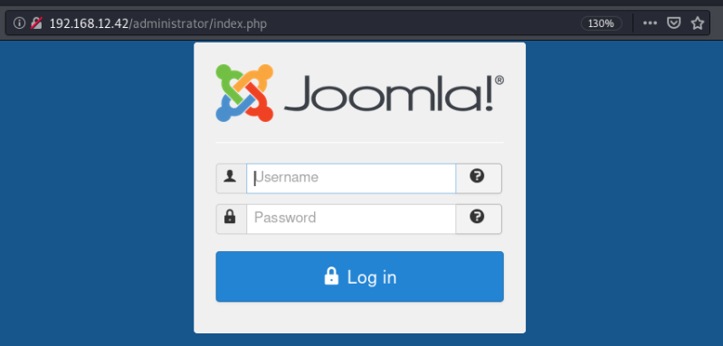
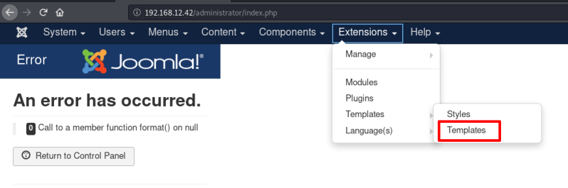
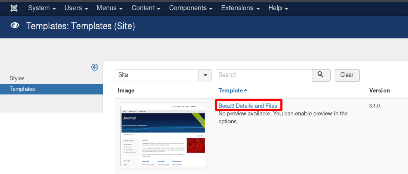

5.2 Login into Joomla as admin
a) Go to your Internet Browser and login as “admin”.
http://192.168.12.42/administrator/index.php
Username: admin
Password: snoopy

b) Go to “Templates” section and choose “Beez3" template.
Maybe you have an error after login, but you can go on anyway.


 Index
Index